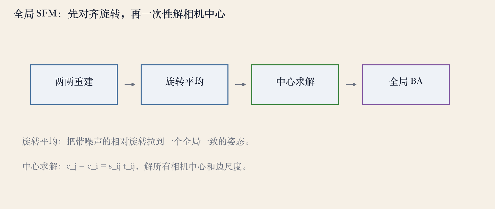
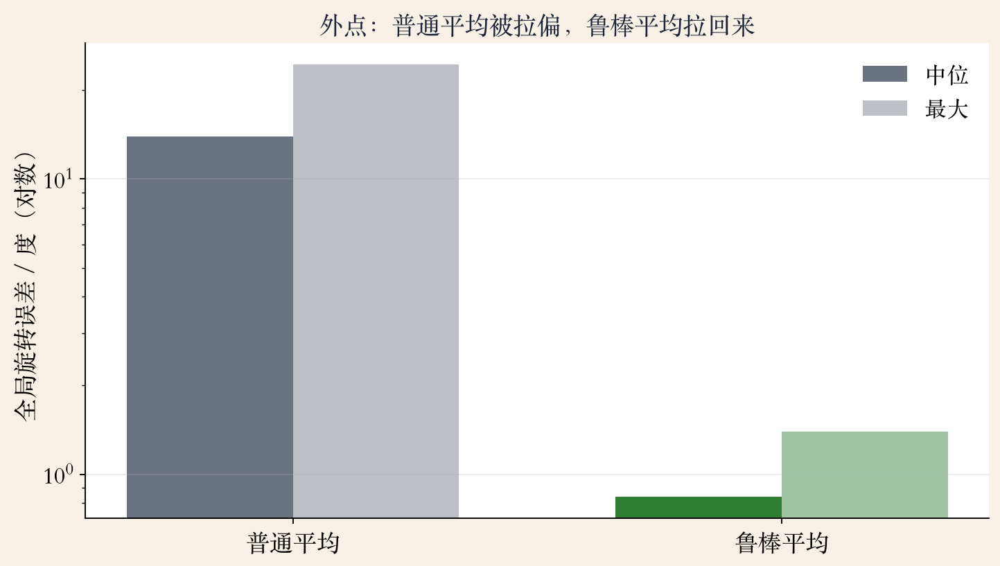
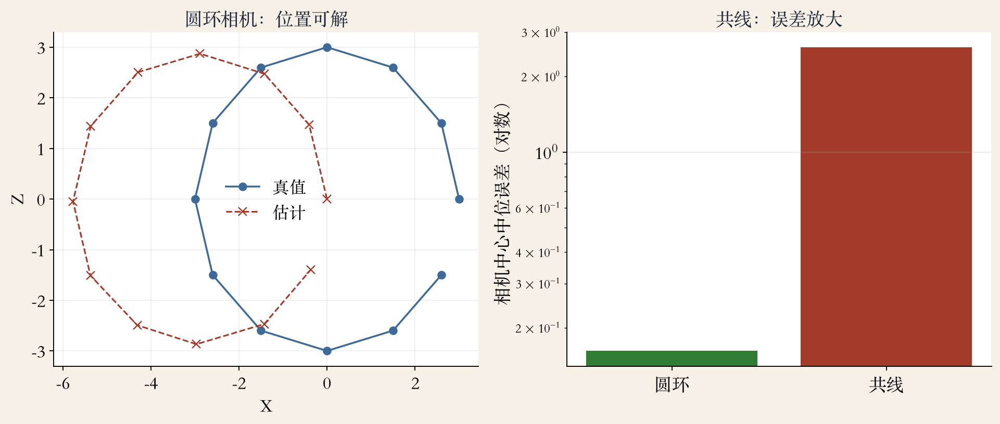

全局 SFM · 一次性解
全局 SFM：一次解所有相机
增量式逐台加相机，越到后面越慢。
全局式先算全特征对应，再一次求解。
适合上万张、顺序打乱的照片集。
代价是前期匹配和相对旋转要算全。
依据：原书第 728 页
两条路线
增量式：逐台加，局部稳
全局式：先对齐，再一次解
全局式依赖匹配质量与内存
正课第九十九集
01 / 10
原书第 729 页 · 四步管线
四步：两两重建到全局 BA
两两重建，得到相对旋转和平移方向。
旋转平均，得到每台相机的全局朝向。
线性求解相机中心与每条边的尺度。
最后可选全局 BA 精化。
依据：原书第 729 页

四步管线：两两重建、旋转平均、中心求解、全局 BA｜程序生成，未用教材或论文原图
正课第九十九集
02 / 10
原书第 729 页 · 旋转平均
旋转平均：加权、投影、降权
邻居候选加权求和，SVD 投影回旋转。
旋转矩阵不是向量，不能算术平均。
外点会把平均拉偏，按残差降权。
灭点、重力或 IMU 可消旋转漂移。
依据：原书第 729 页
鲁棒平均
候选：邻边的相对旋转
内层：加权求和 + SVD 投影
外层：残差大就降权
辅助：灭点 / 重力 / IMU
正课第九十九集
03 / 10
原书第 730 页 · 中心与尺度
中心方程：方向、尺度、规范
中心关系：c_j 减 c_i 等于 s_ij 乘 t_ij。
叉乘形式只解相机位置。
固定一台相机，消掉平移规范。
固定一条边的尺度，消掉尺度规范。
依据：原书第 730 页
c_j − c_i = s_ij · t_ij
t_ij：全局旋转后的单位平移方向；s_ij：边尺度。真实系统只能定到相似变换
正课第九十九集
04 / 10
原书第 730 页 · 共线退化
共线相机：位置能沿线滑动
每条边只约束方向，不约束距离。
共线时方向几乎一样，尺度可自由调。
近似共线也会让条件数变坏。
秩亏表示沿线的绝对位置不可观测。
依据：原书第 730 页
诊断与破局
看线性系统的条件数
看中心是否近似一条线
看边尺度是否互相矛盾
共享尺度、广角、多方向基线
正课第九十九集
05 / 10
工程扩展 · 分块与并行
分布式：分块算，再对齐
匹配按图分块，旋转和中心分区解。
大规模任务拆到多台机器。
边界不一致，合并后再全局对齐。
边太多，通信和存储会成瓶颈。
依据：原书第 730 页
开源管线
Theia
OpenMVG
两者都包含全局技术
原书第 730 页
正课第九十九集
06 / 10
合成实验 · 12 相机 30 边
看图：两条错边拉偏全局朝向
12 台相机、30 条边，其中 2 条外点。
相对旋转噪声 0.5 度。
普通平均：中位 13.93，最大 24.46。
鲁棒平均：中位 0.84，最大 1.39。
依据：本集实验；原书第 729 页

旋转平均误差：普通中位 13.93°，鲁棒中位 0.84°｜程序生成，未用教材或论文原图
正课第九十九集
07 / 10
合成实验 · 圆环与共线
看图：共线时误差放大
圆环：中位 0.162，最大 0.238。
共线：中位 2.61，最大 5.61。
条件数从 114 涨到 615。
两组用同一张边图、0.5 度方向噪声。
依据：本集实验；原书第 730 页

中心误差：圆环中位 0.162，共线中位 2.61；条件数 114→615｜程序生成，未用教材或论文原图
正课第九十九集
08 / 10
工程诊断 · 失败边界
失败边界：先查边图与几何
外点多、边图孤岛、共线、纯旋转。
基线差异大，代数解没有加权。
尺度约束不足，整体缩放会飘。
查连通、残差、条件数，和 GPS 对照。
依据：原书第 730 页；本集实验
取舍
全局式：快，误差不按顺序累积
全局式：对相对旋转敏感
增量式：慢，会漂，局部更稳
选型看数据规模与几何质量
正课第九十九集
09 / 10
收束 · 下一集
总结：先转，再解，最后精化
两两重建加旋转平均，定全局朝向。
中心与尺度用线性系统求解。
鲁棒、连通、防共线。
下一集：SLAM 的在线与回环。
依据：原书第 728–730 页
三件事
先对齐旋转
再解中心与尺度
最后全局 BA
正课第九十九集
10 / 10